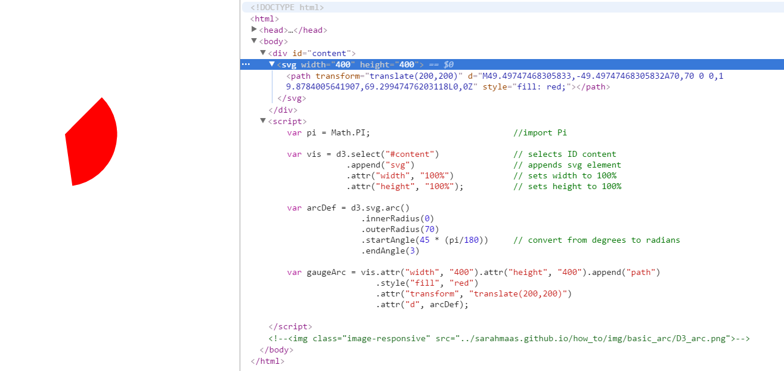
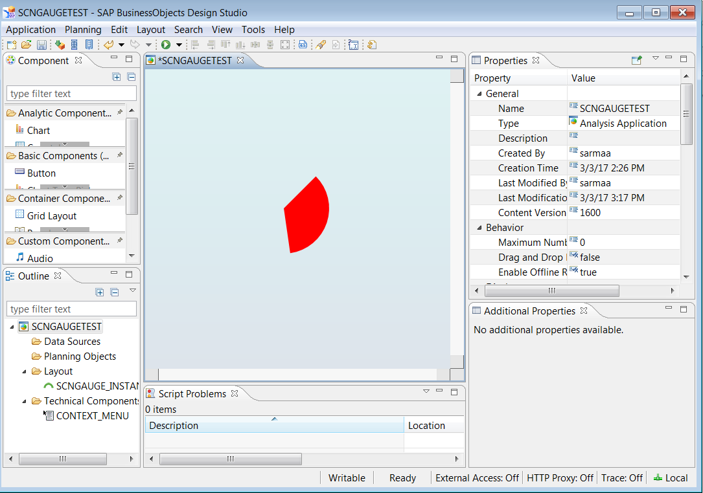
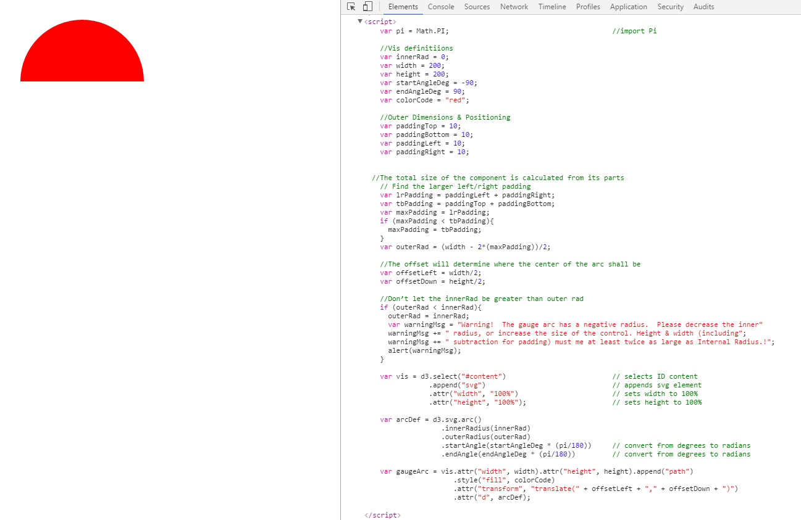
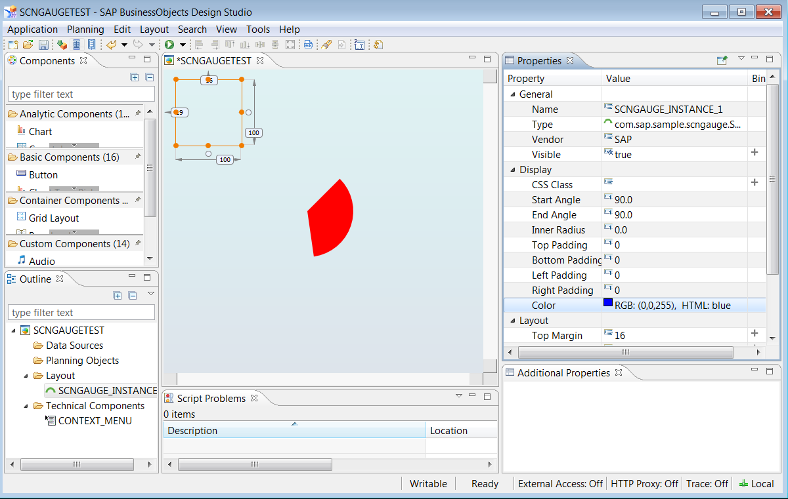
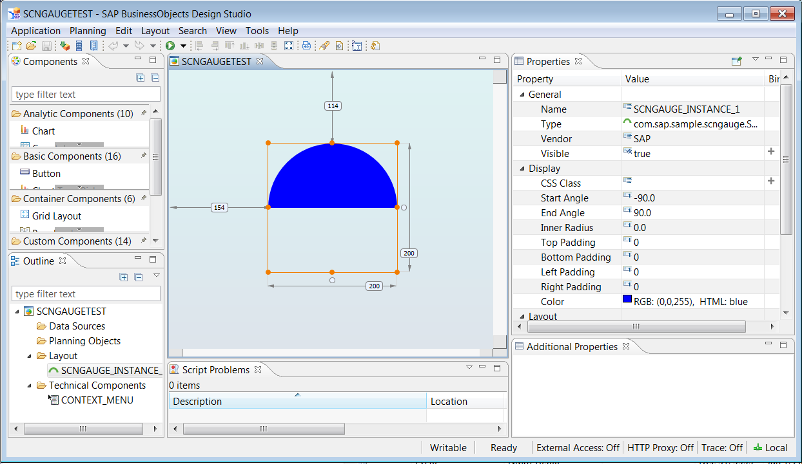
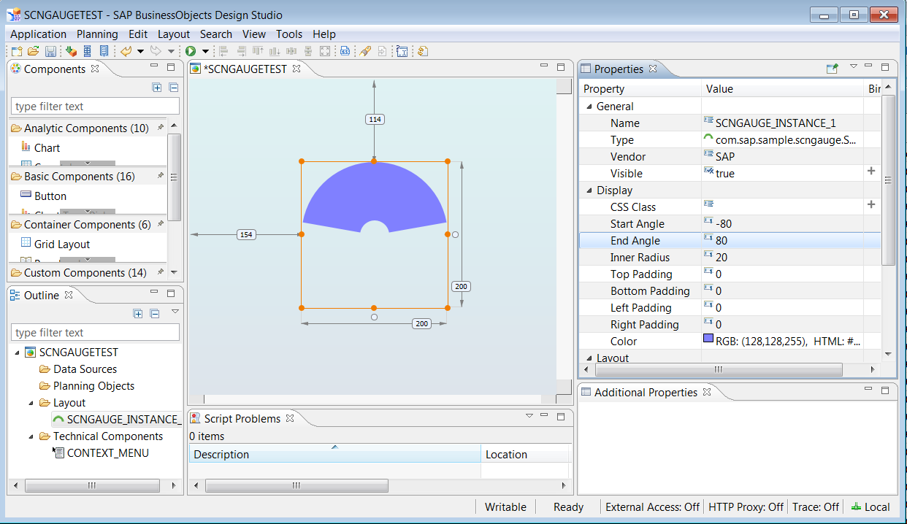

Introduction to D3 and Components
Part 2a – Your first Steps with D3
The first part of this process is to start drawing your graphics using SVG. D3 is already built into Design Studio's SDK framework.
This is a basic HTML file to use as a template. You can see D3 has been included here.
<!DOCTYPE html>
<html>
<head>
<title>My First D3 Chart</title>
<script src="https://cdnjs.cloudflare.com/ajax/libs/d3/3.5.6/d3.min.js" charset="utf-8"></script>
</head>
<body>
<div id='content'></div>
<script>
</script>
</body>
</html>
Here is the arc in the browser and the script that generates it. Since we have no data, the arc's height and width are
explicitly defined so that it will appear.
/* This is the code for creating a simple, static arc in a browser. */
var pi = Math.PI; //import Pi
var vis = d3.select("#content_static_arc") // selects ID content_static_arc
.append("svg") // appends svg element
.attr("width", "100%") // sets width to 100%
.attr("height", "100%"); // sets height to 100%
var arcDef = d3.svg.arc()
.innerRadius(0)
.outerRadius(70)
.startAngle(45 * (pi/180)) // convert from degrees to radians
.endAngle(3)
var gaugeArc = vis.attr("width", "400").attr("height", "400").append("path")
.style("fill", "red")
.attr("transform", "translate(200,200)")
.attr("d", arcDef);

Part 2b – Getting your Arc into a Component
D3 and Require.js are not compatible, so Design Studio has a modified version of D3 built in. This is added to your project
via the contribution.xml file using the tag <stdInclude kind="d3"/>.
Here is the script for the Design Studio extension and the arc as rendered in Design Studio. The height and width are still
explicitly defined.
sap.designstudio.sdk.Component.subclass("com.sap.sample.scngauge.SCNGauge", function() {
var that = this;
this.init = function() {
var myDiv = that.$()[0]; // added in as compared to browser D3
var pi = Math.PI; //import Pi
var vis = d3.select(myDiv) // selects myDiv
.append("svg") // appends svg element
.attr("width", "100%") // sets width to 100%
.attr("height", "100%"); // sets height to 100%
var arcDef = d3.svg.arc()
.innerRadius(0)
.outerRadius(70)
.startAngle(45 * (pi/180)) // convert from degrees to radians
.endAngle(3)
var gaugeArc = vis.attr("width", "400").attr("height", "400").append("path")
.style("fill", "red")
.attr("transform", "translate(200,200)")
.attr("d", arcDef);
};
});

Differences
You can see from looking at the code for both that the differences are fairly minor, since we are not yet binding any data
to the arc. The real change is that in Design Studio it is nested inside functions and the 'div' it's assigned to is called
a little differently than normal. var that = this; gives us a bound reference to this as it refers
to the component itself, which may no longer be the scope of this as the code executes.
Properties
Right now, all that's being rendered is a static graphic. D3 is supposed to be about representing data, so the next step is to
make a list of all the properties that should be configurable. This is the list provided by the tutorial:
Configurable Properties
| Property | Description |
|---|
| Width and Height | size of the container |
| Start Angle (in degrees) | starting angle of the arc, 0 is straight up and 180 is straight down |
| End Angle (in degrees) | finishing angle of the arc |
| Padding (Top/Bottom/Left/Right) | allow for buffer space on the edges of the container |
| Inner Radius of the Arc | 0 for it to be pie shaped, greater than 0 for a cutout in the center |
| Outer Radius of the Arc | distance between the center of the gauge and the outside bounded edge of the arc |
| Centerpoint | origin, the center of the arc |
| Color | color of the arc |
Some of the properties are related, so not all of them would need to be set and could be derived. Height and width are
standard properties of objects in Design Studio, so these would have to be set. From these, the (relative) centerpoint could be
calculated. Given set values for the padding, the outer radius could be calculated.
Part 3a – Making your Arc Configurable
Define the basic properties and set default values:
//Vis definitions
var innerRad = 0;
var width = 200;
var height = 200;
var startAngleDeg = -90;
var endAngleDeg = 90;
var colorCode = "red";
Define the basic margins and set default values:
//Outer Dimensions & Positioning
var paddingTop = 10;
var paddingBottom = 10;
var paddingLeft = 10;
var paddingRight = 10;
Define derived properties based on existing properties:
//The total size of the component is calculated from its parts
// Find the larger left/right padding
var lrPadding = paddingLeft + paddingRight;
var tbPadding = paddingTop + paddingBottom;
var maxPadding = lrPadding;
if (maxPadding < tbPadding){
maxPadding = tbPadding;
}
var outerRad = (width - 2*(maxPadding))/2;
//The offset will determine where the center of the arc shall be
var offsetLeft = width/2;
var offsetDown = height/2;
Define error handling for bad settings:
//Don’t let the innerRad be greater than outer rad
if (outerRad < innerRad){
outerRad = innerRad;
var warningMsg = "Warning! The gauge arc has a negative radius. Please decrease the inner"
warningMsg += " radius, or increase the size of the control. Height & width (including";
warningMsg += " subtraction for padding) must be at least twice as large as Internal Radius!";
alert(warningMsg);
}
Here is the completed code for the responsive change for D3 in the browser:
var pi = Math.PI; //import Pi
//Vis definitiions
var innerRad = 0;
var width = 200;
var height = 200;
var startAngleDeg = -90;
var endAngleDeg = 90;
var colorCode = "red";
//Outer Dimensions & Positioning
var paddingTop = 10;
var paddingBottom = 10;
var paddingLeft = 10;
var paddingRight = 10;
//The total size of the component is calculated from its parts
// Find the larger left/right padding
var lrPadding = paddingLeft + paddingRight;
var tbPadding = paddingTop + paddingBottom;
var maxPadding = lrPadding;
if (maxPadding < tbPadding){
maxPadding = tbPadding;
}
var outerRad = (width - 2*(maxPadding))/2;
//The offset will determine where the center of the arc shall be
var offsetLeft = width/2;
var offsetDown = height/2;
//Don’t let the innerRad be greater than outerRad
if (outerRad < innerRad){
outerRad = innerRad;
var warningMsg = "Warning! The gauge arc has a negative radius. Please decrease the inner"
warningMsg += " radius, or increase the size of the control. Height & width (including";
warningMsg += " subtraction for padding) must be at least twice as large as Internal Radius!";
alert(warningMsg);
}
var vis = d3.select("#content") // selects ID content
.append("svg") // appends svg element
.attr("width", "100%") // sets width to 100%
.attr("height", "100%"); // sets height to 100%
var arcDef = d3.svg.arc()
.innerRadius(innerRad)
.outerRadius(outerRad)
.startAngle(startAngleDeg * (pi/180)) // convert from degrees to radians
.endAngle(endAngleDeg * (pi/180)) // convert from degrees to radians
var gaugeArc = vis.attr("width", width).attr("height", height).append("path")
.style("fill", colorCode)
.attr("transform", "translate(" + offsetLeft + "," + offsetDown + ")")
.attr("d", arcDef);
Here is the arc that is generated by the new changes - you can see that the start and end angle has changed from before
and is now more representative of a gauge.

Part 3b – Adding Properties to the Properties Pane
This is now where the differences become more noticeable. We cannot simply set variables if we want to create a configurable
arc in Design Studio. For that, we have to set up properties that are then assigned. Properties are set up and initialized if
desired in component.xml. Properties are added after the include elements.
The Property Element
There are both mandatory and optional attributes for properties in Design Studio.
Mandatory Attributes
| Attribute | Description |
|---|
| id | technical name |
| title | label |
| type | technical type |
Allowed types are: boolean Color float int ResultCell
ResultCellList ResultCellSet ResultSet ScriptText String
Text Url
These are case sensitive.
Optional Attributes
| Attribute | Description |
|---|
| group | Properties grouping, default is Display |
| bindable | enables data binding |
| tooltip | mouseover tooltip text |
| visible | set the property via the Additional Properties Sheet, via script only, or not at all |
Examples of Property Elements
Here is an example of a float property with only the mandatory attributes assigned, startAngleDeg:
<property
id="startAngleDeg"
title="Start Angle"
type="float"/>
Here is an example of an int property with visible set to false, offsetLeft:
<property
id="offsetLeft"
title="Centerpoint Offset X-Axis"
type="int"
visible="false"/>>
The <initialization> Element
This element allows you to set default values for properties.
These are both valid empty initialization elements:
<initialization/>
<initialization>
</initialization>
Best practice is to pre-fill these - mandatory properties are uppercase: HEIGHT WIDTH
<initialization>
<defaultValue property="WIDTH">100</defaultValue>
<defaultValue property="HEIGHT">100</defaultValue>
</initialization>
Pre-filling some additional properties: startAngleDeg endAngleDeg colorCode
<initialization>
<defaultValue property="WIDTH">100</defaultValue>
<defaultValue property="HEIGHT">100</defaultValue>
<defaultValue property="startAngleDeg">-90.0</defaultValue>
<defaultValue property="endAngleDeg">90.0</defaultValue>
<defaultValue property="colorCode">blue</defaultValue>
</initialization>
Properties and Initialization in Action
Here are all of the properties for our project. Making a table like this will help to keep track of all the properties for
project during setup.
These properties are derived from other properties, so they will be hidden (visible is set to false):
outerRad offsetLeft offsetDown
Properties
| id | title | type | visible |
|---|
| startAngleDeg | Start Angle | float | |
| endAngleDeg | End Angle | float | |
| innerRad | Inner Radius | float | |
| outerRad | Outer Radius | float | false |
| offsetLeft | Centerpoint Offset X-Axis | int | false |
| offsetDown | Centerpoint Offset Y-Axis | int | false |
| paddingTop | Top Padding | int | |
| paddingBottom | Bottom Padding | int | |
| paddingLeft | Left Padding | int | |
| paddingRight | Right Padding | int | |
| colorCode | Color | Color | |
Full configuration.xml file:
<?xml version="1.0" encoding="UTF-8"?>
<sdkExtension
eula=""
id="com.sap.sample.scngauge"
title="SCN Tutorial Gauge"
vendor="SAP"
version="15.1"
xmlns="http://www.sap.com/bi/zen/sdk"
xmlns:xsi="http://www.w3.org/2001/XMLSchema-instance"
xsi:schemaLocation="http://www.sap.com/bi/zen/sdk">
<license>license</license>
<component
databound="false"
group=""
handlerType="div"
icon="res/gauge.png"
id="SCNGauge"
propertySheetPath="res/additional_properties_sheet/additional_properties_sheet.html"
title="Gauge"
tooltip=""
visible="true">
<stdInclude kind="d3"/>
<jsInclude>res/js/component.js</jsInclude>
<cssInclude>res/css/component.css</cssInclude>
<property
id="startAngleDeg"
title="Start Angle"
type="float"/>
<property
id="endAngleDeg"
title="End Angle"
type="float"/>
<property
id="innerRad"
title="Inner Radius"
type="float"/>
<property
id="outerRad"
title="Outer Radius"
type="float"
visible="false"/>
<property
id="offsetLeft"
title="Centerpoint Offset X-Axis"
type="int"
visible="false"/>
<property
id="offsetDown"
title="Centerpoint Offset Y-Axis"
type="int"
visible="false"/>
<property
id="paddingTop"
title="Top Padding"
type="int"/>
<property
id="paddingBottom"
title="Bottom Padding"
type="int"/>
<property
id="paddingLeft"
title="Left Padding"
type="int"/>
<property
id="paddingRight"
title="Right Padding"
type="int"/>
<property
id="colorCode"
title="Color"
type="Color"/>
<initialization>
<defaultValue property="WIDTH">100</defaultValue>
<defaultValue property="HEIGHT">100</defaultValue>
<defaultValue property="startAngleDeg">-90.0</defaultValue>
<defaultValue property="endAngleDeg">90.0</defaultValue>
<defaultValue property="colorCode">blue</defaultValue>
</initialization>
</component>
</sdkExtension>
This sets up the properties, but when we bring it into Design Studio they don't actually do anything because they haven't been
assigned.

Part3c – The Dark Art of Property Synchronization
Properties live in 2 or 3 of these places depending on where you're running the component:
server, canvas/client, additional properties sheet (APS). Properties are synchronized by changes happening on the server or an
explicit Javascript function firePropertiesChanged()
which sends a message to the server for further propagation if needed.
I'm not even going to try to explain the different scenarios so just read this:
https://blogs.sap.com/2015/11/11/3c-the-dark-art-of-property-synchronization/
Ensure that you explicitly initialize every property in the APS and component.js and make sure to call firePropertiesChanged()
when appropriate.
Part 3d – Bringing Your Properties to Life
Property Initialization
In component.js, replace:
var that = this;
With:
var me = this;
// initialize properties
me._colorCode = 'blue';
me._innerRad = 0.0;
me._outerRad = 0.0;
me._endAngleDeg = 90.0;
me._startAngleDeg = 90.0;
me._paddingTop = 0;
me._paddingBottom = 0;
me._paddingLeft = 0;
me._paddingRight = 0;
me._offsetLeft = 0;
me._offsetDown = 0;
This is similar to what was done in Part 3a for the browser version, but now referencing the component as an object.
Redraw Encapsulation
In the browser, the arc is drawn and then we have no way of manipulating it further. This is not the case for our Design
Studio extension. However, this means we need to encapsulate some functions to allow for more than just initialization.
Create a redraw() function and move everything from init into it. Add a call to me.redraw() in
init() to replace what was removed. Add a line to clear any existing objects. d3.select(myDiv).selectAll("*").remove();
sap.designstudio.sdk.Component.subclass("com.sap.sample.scngauge.SCNGauge", function() {
var me = this;
// initialize properties
me._colorCode = 'blue';
me._innerRad = 0.0;
me._outerRad = 0.0;
me._endAngleDeg = 90.0;
me._startAngleDeg = 90.0;
me._paddingTop = 0;
me._paddingBottom = 0;
me._paddingLeft = 0;
me._paddingRight = 0;
me._offsetLeft = 0;
me._offsetDown = 0;
me.redraw = function() {
var myDiv = me.$()[0]; // changed reference to me from that
var pi = Math.PI; // import Pi
// clear gauges if they exist
d3.select(myDiv).selectAll("*").remove();
var vis = d3.select(myDiv) // selects myDiv
.append("svg") // appends svg element
.attr("width", "100%") // sets width to 100%
.attr("height", "100%"); // sets height to 100%
var arcDef = d3.svg.arc()
.innerRadius(0)
.outerRadius(70)
.startAngle(45 * (pi/180)) // convert from degrees to radians
.endAngle(3)
var gaugeArc = vis.attr("width", "400").attr("height", "400").append("path")
.style("fill", "red")
.attr("transform", "translate(200,200)")
.attr("d", arcDef);
}
this.init = function() {
me.redraw(); // now calls redraw instead
};
});
Add Derived Properties
The derived properties will need to be recalculated at runtime, so these will go inside the redraw() function.
This code from the browser script:
//The total size of the component is calculated from its parts
// Find the larger left/right padding
var lrPadding = paddingLeft + paddingRight;
var tbPadding = paddingTop + paddingBottom;
var maxPadding = lrPadding;
if (maxPadding < tbPadding){
maxPadding = tbPadding;
}
var outerRad = (width - 2*(maxPadding))/2;
//The offset will determine where the center of the arc shall be
var offsetLeft = width/2;
var offsetDown = height/2;
Becomes this in the Design Studio extension script:
//The total size of the component is calculated from its parts
// Find the larger left/right padding
var lrPadding = me._paddingLeft + me._paddingRight;
var tbPadding = me._paddingTop + me._paddingBottom;
var maxPadding = lrPadding;
if (maxPadding < tbPadding){
maxPadding = tbPadding;
}
me._outerRad = (me.$().width() - 2*(maxPadding))/2;
//The offset will determine where the center of the arc shall be
me._offsetLeft = me._outerRad + me._paddingLeft;
me._offsetDown = me._outerRad + me._paddingTop;
Changes of note here are appending me._ to variable name, the change for calling width from width to
me.$().width(), changes to the offset calculations,
and that some of the variables have already been initialized that weren't yet when we were working in the browser.
Update Other Items
The radius validation, arcDef and gaugeArc now need to be updated as well. As a reminder,
these are inside redraw().
/* Configurable Arc in Browser */
//Don’t let the innerRad be greater than outerRad
if (outerRad < innerRad){
outerRad = innerRad;
var warningMsg = "Warning! The gauge arc has a negative radius. Please decrease the inner"
warningMsg += " radius, or increase the size of the control. Height & width (including";
warningMsg += " subtraction for padding) must be at least twice as large as Internal Radius!";
alert(warningMsg);
}
var arcDef = d3.svg.arc()
.innerRadius(innerRad)
.outerRadius(outerRad)
.startAngle(startAngleDeg * (pi/180)) // convert from degrees to radians
.endAngle(endAngleDeg * (pi/180)) // convert from degrees to radians
var gaugeArc = vis.attr("width", width).attr("height", height).append("path")
.style("fill", colorCode)
.attr("transform", "translate(" + offsetLeft + "," + offsetDown + ")")
.attr("d", arcDef);
/* Static Arc in Design Studio */
var arcDef = d3.svg.arc()
.innerRadius(0)
.outerRadius(70)
.startAngle(45 * (pi/180)) // convert from degrees to radians
.endAngle(3)
var gaugeArc = vis.attr("width", "400").attr("height", "400").append("path")
.style("fill", "red")
.attr("transform", "translate(200,200)")
.attr("d", arcDef);
/* Updated to Configurable Arc in Design Studio SDK */
// Don’t let the innerRad be greater than outerRad
if (outerRad < innerRad){
outerRad = innerRad;
var warningMsg = "Warning! The gauge arc has a negative radius. Please decrease the inner"
warningMsg += " radius, or increase the size of the control. Height & width (including";
warningMsg += " subtraction for padding) must be at least twice as large as Internal Radius!";
alert(warningMsg);
}
var arcDef = d3.svg.arc()
.innerRadius(me._innerRad)
.outerRadius(me._outerRad)
.startAngle(me._startAngleDeg * (pi/180)) // convert from degrees to radians
.endAngle(me._endAngleDeg * (pi/180)) // convert from degrees to radians
var gaugeArc = vis.attr("width", me.$().width()).attr("height", me.$().height()).append("path")
.style("fill", me._colorCode)
.attr("transform", "translate(" + me._offsetLeft + "," + me._offsetDown + ")")
.attr("d", arcDef);
Changes of note here are appending me._ to variable name, the change for calling width from width to
me.$().width(), and the change for calling height from height to me.$().height().
Error Handling/Validation
Previously, we set up a warning for setting a smaller outerRad than the innerRad. This is in the
redraw() function but that doesn't help with updating properties. To handle
this in the Design Studio SDK it's best to also set up a validation function and then a recalculate outer radius function.
/* Design Studio SDK */
/*******************************************************************
* me.validateRadii
* Description: double checks the inner and outer radii to see if
* they're valid
* Parameters: value (type float)
*******************************************************************/
me.validateRadii = function(inner, outer) {
if (inner <= outer) {
return true;
} else {
return false;
}
};
/*******************************************************************
* me.recalculateOuterRadius
* Description: recalculates the outer radius, double checks inner
* radius, if value is invalid it does not recalculate
* Parameters: value (type float)
*******************************************************************/
me.recalculateOuterRadius = function(paddingLeft, paddingRight, paddingTop, paddingBottom){
// Find the larger left/right padding
var lrPadding = paddingLeft + paddingRight;
var tbPadding = paddingTop + paddingBottom;
var maxPadding = lrPadding;
if (maxPadding < tbPadding){
maxPadding = tbPadding
}
var newOuterRad = (me.$().width() - 2*(maxPadding))/2;
var isValid = me.validateRadii(me._innerRad, newOuterRad);
if (isValid === true){
me._outerRad = newOuterRad;
return true;
}
else {
return false;
}
}
In addition to this change, you should now remove a line of code from me.redraw().
// Don’t let the innerRad be greater than outerRad
if (outerRad < innerRad){
outerRad = innerRad;
var warningMsg = "Warning! The gauge arc has a negative radius. Please decrease the inner"
warningMsg += " radius, or increase the size of the control. Height & width (including";
warningMsg += " subtraction for padding) must be at least twice as large as Internal Radius!";
alert(warningMsg);
}
Deactivate or remove outerRad = innerRad; and change outerRad < innerRad to
outerRad <= innerRad.
// Don’t let the innerRad be greater than outerRad
if (outerRad <= innerRad){ // changed sign
//outerRad = innerRad; // deactivated
var warningMsg = "Warning! The gauge arc has a negative radius. Please decrease the inner"
warningMsg += " radius, or increase the size of the control. Height & width (including";
warningMsg += " subtraction for padding) must be at least twice as large as Internal Radius!";
alert(warningMsg);
Updating Properties
We need to set up get and set methods. Unlike typical classes, the Design Studio SDK framework has a standard pattern for
this which is actually a single function. It is called <property>(value), where it returns either
the value of the property(when nothing is passed) or the parent object this.
/* Property Getter and Setter Functions Example */
this.color = function(value) {
if (value === undefined) {
return this.$().css("background-color"); // return current value of property
} else {
this.$().css("background-color", value); // set property to passed value
return this;
}
};
In a more complex rendering, you might need to call an additional function like the redraw function we have created for the
gauge. If this were added to the above code it would be after the property update right before the return:
this.$().css("background-color", value); // set property to passed value
me.redraw(); // redraw the visualization
return this;
Property Getter and Setter Functions for Our Project
/* Getters and Setters for Gauges */
/*******************************************************************
* me.colorCode
* Description: gets and sets the colorCode based on the value
* Parameters: value (type color)
*******************************************************************/
me.colorCode = function(value) {
if (value === undefined) {
return me._colorCode;
} else {
me._colorCode = value;
me.redraw();
return this;
}
};
/*******************************************************************
* me.innerRad
* Description: gets and sets the innerRad based on the value,
* if value is invalid just warns and does not set
* Parameters: value (type float)
*******************************************************************/
me.innerRad = function(value) {
if (value === undefined) {
return me._innerRad;
} else {
var isValid = me.validateRadii(value, me._outerRad);
if (isValid === false){
alert("Warning! The gauge arc can't have a small inner radius than outer! Inner Radius must be equal to or less than " + me._outerRad);
alert("Please decrease the inner radius, or increase the size of the control. Height & width (including subtraction for padding) must me at least twice as large as Internal Radius!");
} else {
me._innerRad = value;
me.redraw();
}
return this;
}
};
/*******************************************************************
* me.endAngleDeg
* Description: gets and sets the endAngleDeg based on the value
* Parameters: value (type float)
*******************************************************************/
me.endAngleDeg = function(value) {
if (value === undefined) {
return me._endAngleDeg;
} else {
me._endAngleDeg = value;
me.redraw();
return this;
}
};
/*******************************************************************
* me.startAngleDeg
* Description: gets and sets the startAngleDeg based on the value
* Parameters: value (type float)
*******************************************************************/
me.startAngleDeg = function(value) {
if (value === undefined) {
return me._startAngleDeg;
} else {
me._startAngleDeg = value;
me.redraw();
return this;
}
};
/*******************************************************************
* me.paddingTop
* Description: gets and sets the paddingTop based on the value,
* if value is invalid just warns and does not set
* Parameters: value (type int)
*******************************************************************/
me.paddingTop = function(value) {
if (value === undefined) {
return me._paddingTop;
} else {
var isValid =me.recalculateOuterRadius(me._paddingLeft, me._paddingRight, value, me._paddingBottom);
if (isValid === false){
alert("Warning! The gauge arc can't have a small inner radius than outer! Outer Radius must be equal to or greater than " + me._innerRad);
alert("Please decrease the inner radius, or increase the size of the control. Height & width (including subtraction for padding) must me at least twice as large as Internal Radius!");
} else {
me._paddingTop = value;
me.redraw();
}
return this;
}
};
/*******************************************************************
* me.paddingBottom
* Description: gets and sets the paddingBottom based on the value,
* if value is invalid just warns and does not set
* Parameters: value (type int)
*******************************************************************/
me.paddingBottom = function(value) {
if (value === undefined) {
return me._paddingBottom;
} else {
var isValid = me.recalculateOuterRadius(me._paddingLeft, me._paddingRight, me._paddingTop, value);
if (isValid === false){
alert("Warning! The gauge arc can't have a small inner radius than outer! Outer Radius must be equal to or greater than " + me._innerRad);
alert("Please decrease the inner radius, or increase the size of the control. Height & width (including subtraction for padding) must me at least twice as large as Internal Radius!");
} else {
me.me._paddingBottom = value;
me.redraw();
}
return this;
}
};
/*******************************************************************
* me.paddingLeft
* Description: gets and sets the paddingLeft based on the value,
* if value is invalid just warns and does not set
* Parameters: value (type int)
*******************************************************************/
me.paddingLeft = function(value) {
if (value === undefined) {
paddingLeft = me._paddingLeft;
return paddingLeft;
} else {
var isValid = me.recalculateOuterRadius(value, me._paddingRight, me._paddingTop, me._paddingBottom);
if (isValid === false){
alert("Warning! The gauge arc can't have a small inner radius than outer! Outer Radius must be equal to or greater than " + me._innerRad);
alert("Please decrease the inner radius, or increase the size of the control. Height & width (including subtraction for padding) must me at least twice as large as Internal Radius!");
} else {
me._paddingLeft = value;
me.redraw();
}
return this;
}
};
/*******************************************************************
* me.paddingRight
* Description: gets and sets the paddingRight based on the value,
* if value is invalid just warns and does not set
* Parameters: value (type int)
*******************************************************************/
me.paddingRight = function(value) {
if (value === undefined) {
paddingRight = me._paddingRight;
} else {
var isValid = me.recalculateOuterRadius(me._paddingLeft, value, me._paddingTop, me._paddingBottom);
if (isValid === false){
alert("Warning! The gauge arc can't have a small inner radius than outer! Outer Radius must be equal to or greater than " + me._innerRad);
alert("Please decrease the inner radius, or increase the size of the control. Height & width (including subtraction for padding) must me at least twice as large as Internal Radius!");
} else {
me._paddingRight = value;
me.redraw();
}
return this;
}
};
Final Code for Comparison
To save some scrolling, if you want to see, go here. The two files you want are contribution.xml and res/js/component.js.
https://github.com/davidhstocker/YourFirstDesignStudioExtension_Part3/tree/master/com.sap.sample.scngauge
Testing it Out in Design Studio
The initialization appears to work now since the visualization matches the properties set:

It's responsive to changes made in the properties panel too:
